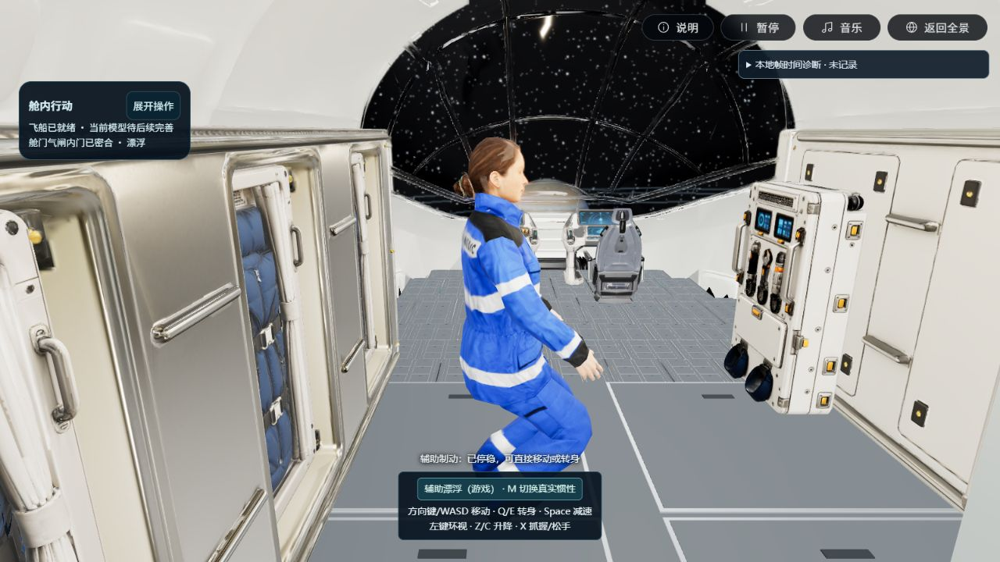
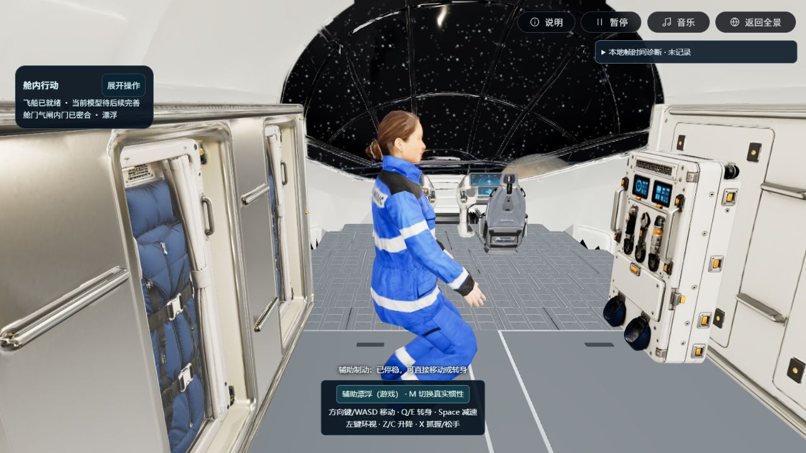
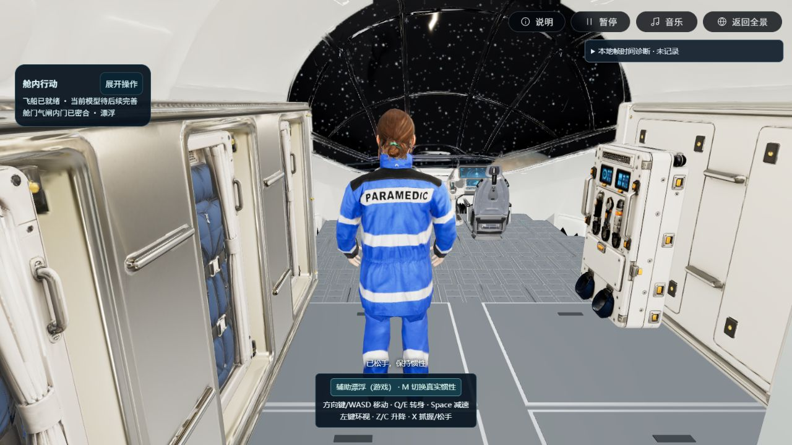
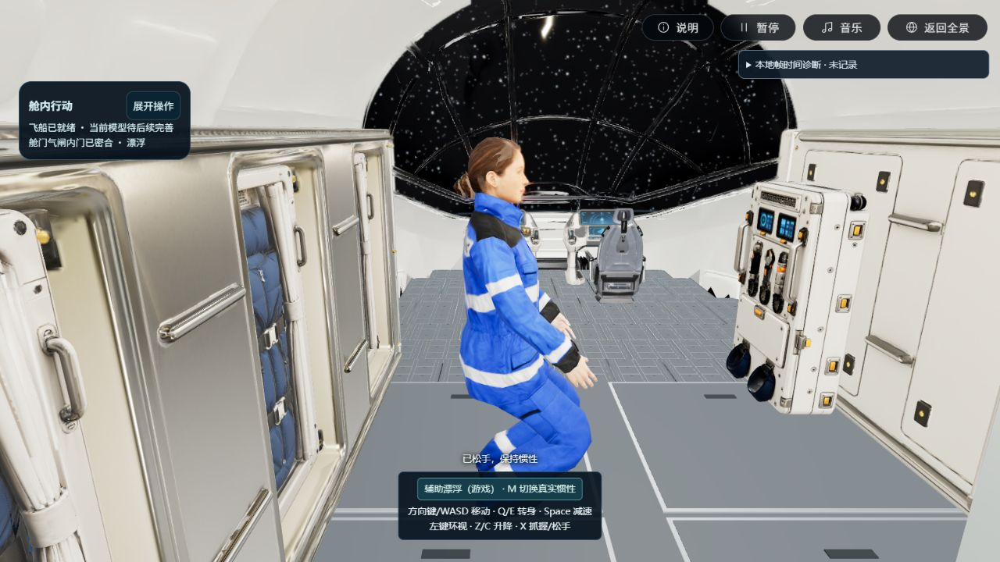
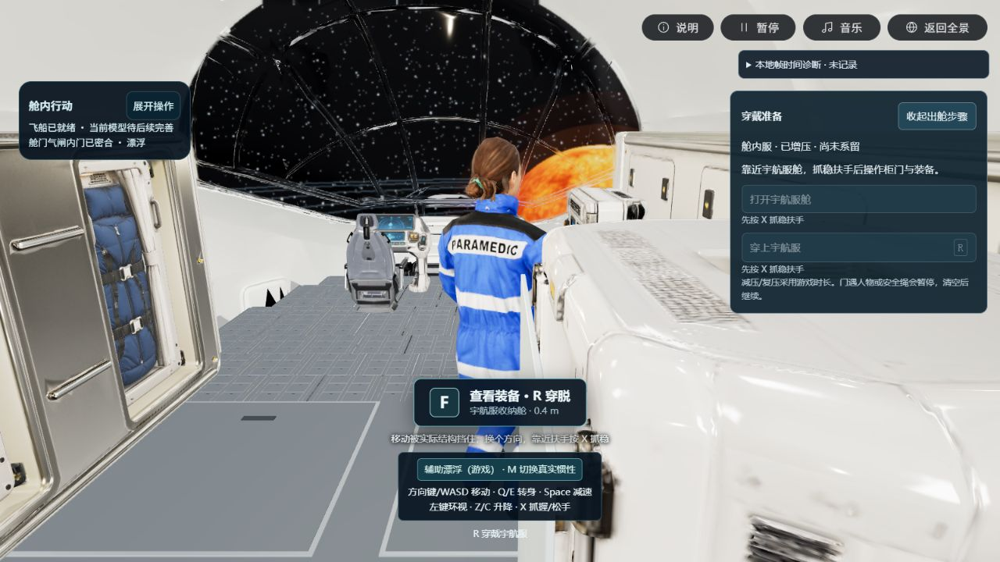
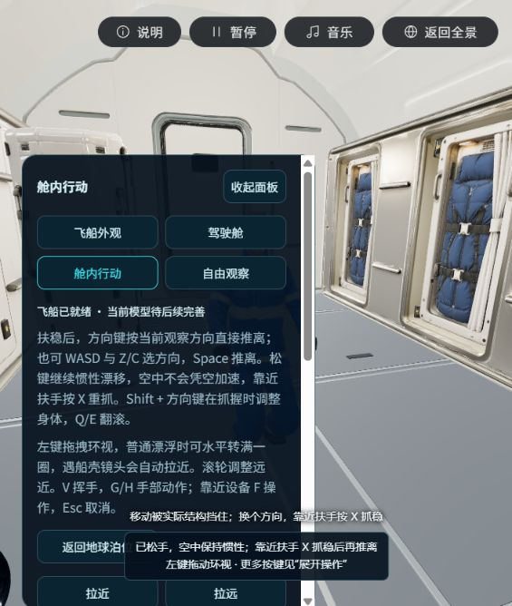

P3-R01 · 2026-10-29 · 桌面 Web · 实际游戏与生产构建
不用再次找扶手，也能移动、转身和减速
上轮只验证了扶手起点的一次推离，没有解决无支撑或撞停后的连续操作。现默认使用明确标注的辅助漂浮（游戏），平移与身体朝向可分别控制。严格惯性保留，漂移实验成功登记后自动切换严格模式，避免辅助力混入科学数据。没有改人物网格、比例、权重或设备几何。
进入本次实际候选入口 · 验收记录 · 8份保护原件哈希
| 按键 | 默认辅助漂浮 |
|---|
| 方向键 / WASD | 按当前观察方向持续移动；松键继续滑行，反方向可改变速度。撞停后可换方向退出。 |
| Q / E | 向左 / 右转身，空中也可使用；转身不替代鼠标环视。 |
| Space | 主动减速直至停稳。停下后仍能直接再次移动。 |
| Z / C | 升 / 降；仍受船壳、地板与设备源面碰撞限制。 |
| Shift + 方向键 / Shift + Q、E | 俯仰、偏航 / 翻滚。设备固定和正在穿脱时不能助推。 |
| M / 模式按钮 | 切换严格惯性与游戏辅助。严格模式保留原扶手推离和无支撑惯性；活跃实验、设备约束或穿脱过程中不允许切换。 |
最终生产构建：空中转身

生产构建实际键盘操作：先X松手、方向键移动，再Space停稳，E转身约79°。人物根位置在转身阶段保持，朝向确实改变；画布1280×720，原模型比例保持。
转身后仍能按观察方向前进

同一生产流程继续按上方向键，再Space停稳。前一段向右位移约0.631米；转身后的前进位移约0.590米。四次记录均无contact，停稳时线速度为0，没有复位人物位置。完整只读状态序列
同一位置，身体朝向独立改变

开发流程：先无支撑向右移动约0.608米并停稳。
随后按E。根位置未变，相机yaw保持0，身体已转为侧面；这里改变的是人物朝向。撞停以后能够退回通道

开发流程继续从左侧横移到服柜附近，实际受结构阻挡；按左方向键反向退出约0.890米，Space停稳。随后M切严格模式，无支撑按上方向键时位置和速度保持，再切回辅助。此图保留首轮状态提示；最终代码另修复了已退出后仍显示旧受阻提示的问题。连续原始状态
保留的失败与原因

此前用户现场。旧控制要求再次抓握，不能解决日常连续操作；上轮的有限推离证据不作为体验通过。新增来源回归第一次复现撞停后无法反向退出。原姿态检查对小于3mm的动画跨面留有末端容差，手部可能越面后被双向射线反锁；辅助模式现对姿态跨面用0容差拦截，更严格阻止穿面。平移4mm安全距离和严格模式旧姿态参数保留。没有缩小碰撞体或跳过来源碰撞。原失败日志保留，来源逐子步记录辅助定位。
检查结果与限制
最终345项测试全部通过、0失败，3套件，115.2916901秒；类型检查通过，生产构建通过16.34秒，保留既有大chunk提示。实际生产浏览器已完成上述无支撑移动→制动→转身→再次移动→制动，读取控制台无error/warn。8份保护原件字节与哈希保持。
此次验证入口使用microgravity=1、lockerDoors=v1、sleepFit=v5、sleepPose=v2；开发与生产流程分别记录，不能拼成同一连续路线。开发长流程拍摄后仅更新了状态提示，最终生产截图来自更新后的构建。辅助平移与姿态稳定是游戏操控，不是无推进器宇航员的真实受力；严格模式另行保留。科学实验自动切严格、锁定辅助、穿戴/暂停/设备约束及保存重建已做工程回归。整船美术、完整EVA、全部设备无指导可用性和目标设备长时性能仍未验收；未安装、上传、部署或发布。